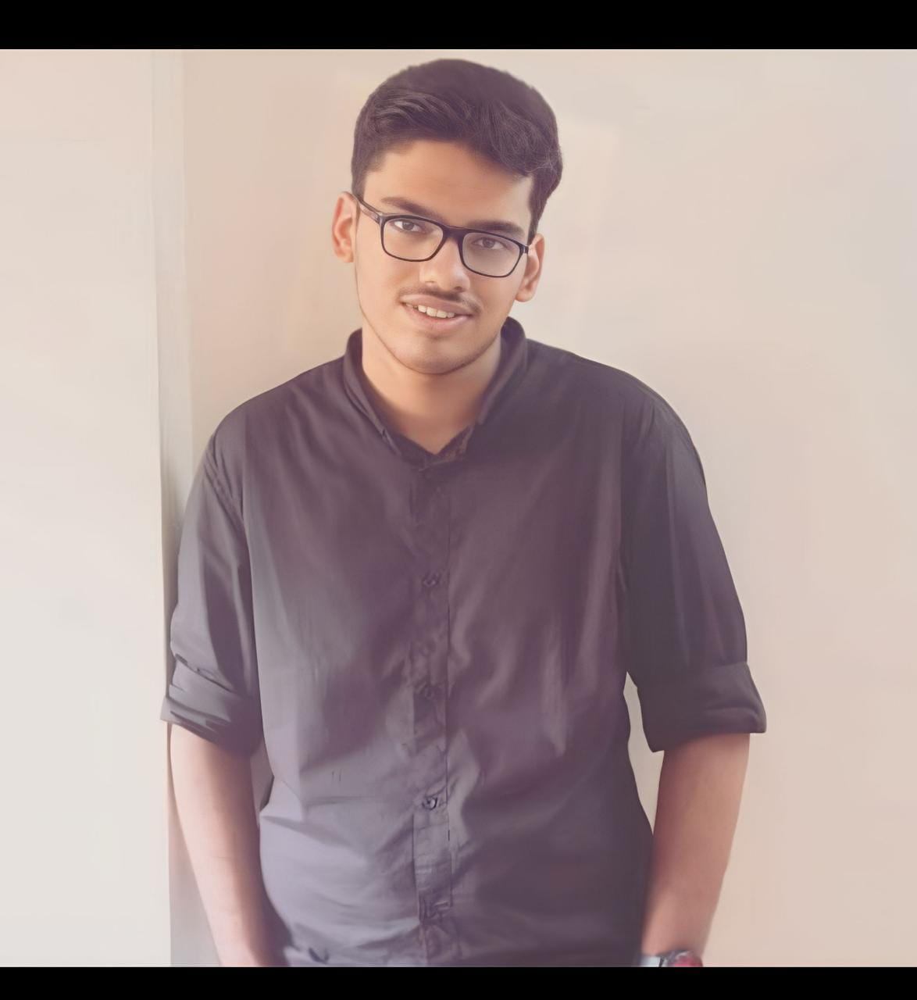

I am Tarun, a second-year student pursuing AI & Data Science (AIDS) Engineering at VESIT. As the class representative, I take pride in fostering effective communication between students and faculty, ensuring a collaborative and supportive environment.
Balancing academics and extracurricular activities, I strive to make the most of my college experience while honing my leadership skills and technical expertise.My journey so far has been enriched by diverse achievements and experiences. I was honored to receive a Maharashtra government scholarship in 8th grade, which motivated me to excel academically. I have actively contributed to organizing various school events and completed impactful projects, such as a resume-building agent, game development, and data analytics, showcasing my passion for innovation and problem-solving.
Beyond academics, I am deeply interested in creating meaningful solutions through technology. I’ve proposed a comprehensive college website to streamline resources for students and worked on a women’s safety app, combining my technical knowledge with social responsibility. These initiatives reflect my drive to make a positive impact and my aspiration to grow as a skilled professional in the AI and tech domains.